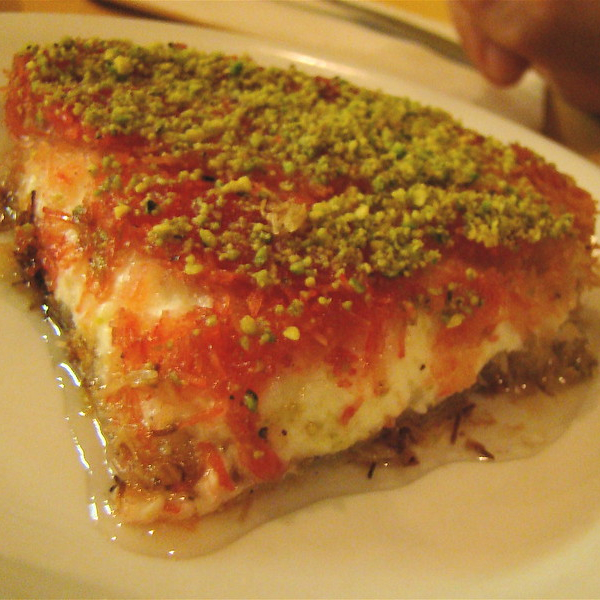

Home
Knafeh

Knafeh is a traditional Middle Eastern dessert with many variations throughout the region. It's made with a type of pastry dough known as "Kataifi", usually filled with cheese, and soaked in attar (sugar syrup). This specific Knafeh recipe is "Knafeh Nabulsi", which uses a mix of white unsalted cheese and mozzarella as a substitute for Nabulsi cheese—a white brined cheese native to the Palestinian city of Nablus.
The following recipe was found on the wonderful palestineinadish website by Wafa Shami. Fully detailed step-by-step instructions, images, and tips are available there. Please check it out!
Ingredients
- ½ pound of Kataifi (8 oz) (half of the bag)
- 1 pound of cheese (check the palestineinadish recipe page for insight and alternatives!)
- ½ cup unsalted butter or ghee
- ¼ crushed pistachios
- 1 cup sugar syrup
Steps
- Take out the frozen kataifi dough and let it thaw for 2-3 hours before using.
- Preheat oven to 350F.
- Shred the cheese or cut it into small pieces.
- Shred the kataifi dough by placing it in a food processor or with a knife.
- Once shredded, place kataifi dough in a bowl and pour over melted butter and coloring (optional). Using your hands, massage the butter into the dough making sure everything is well integrated.
- Grease the bottom of the pan with some butter. Use a 9-inch pan. If using the entire kataifi bag use a 18-inch pan.
- Spread the majority of the dough, leaving about ¼ for the top.
- Add shredded cheese on top, and press well either by the palm of your hand or with the bottom of a glass.
- Take the remaining kataifi dough spread it over the cheese, and press well again either by hand or with the bottom of a glass.
- Bake for 20-30 minutes or until the edges are deeply golden and crispy and the cheese is melted, you can check the cheese with a fork.
- Take it out of the oven, with care flip it into another (same size or slightly larger) platter, then immediately drizzle the knafeh with about ½-3/4 of the warm sugar syrup, ensuring you cover the full surface. Reserve the remaining syrup to the side for anyone who wants extra.
- Sprinkle crushed pistachios on top.
- Cut into pieces and serve hot.